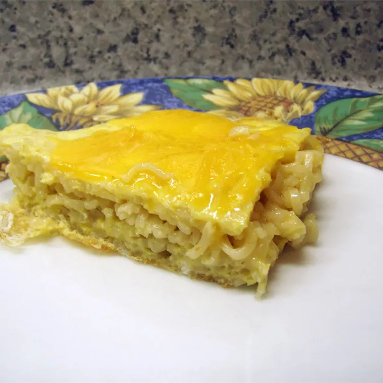

Cheesy Ramen

Description
Ramen noodles are baked into a frittata and topped with shredded cheese. My kids love this frittata for lunch! It's so easy to make!
Ingredients
- 2 (3 ounce) packages chicken flavored ramen noodles
- 6 eggs
- 2 teaspoons butter
- ½ cup shredded Cheddar cheese
Steps
- Place noodles in a saucepan filled with boiling water, reserving the seasoning packet. Cook until tender, and drain. In a medium bowl, whisk together the eggs and seasoning packets from the noodles. Mix in noodles.
- Melt butter in a large skillet over medium heat. Add the noodle mixture, and cook over medium-low heat until firm, 5 to 7 minutes. Cut into fourths, and turn over to brown the other side for 1 to 2 minutes. Sprinkle cheese over the top, and serve.